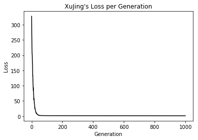
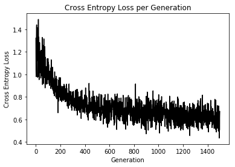

TF实现机器学习举例
用TensorFlow做机器学习并不是一个好的选择，Python中有20多个模块做机器学习，简单的回归来说可以使用statsmodels和sklearn，要比用TF更便捷。为了体现TF的其在机器学习的作用，我们以简单的弹性网回归和logistic回归为例看一看如何使用TF做机器学习（我的GitHub上托管了用TensorFlow实现常用机器学习的所有源代码，比如监督学习中的决策树，KNN,SVM及非监督学习的一些算法，可在我的GitHub主页中找到）
1.TF做弹性网回归
直接上代码，边看我们边解释
# Elastic Net Regression
#----------------------------------
# y = Ax + b
# y = Sepal Length
# x = Pedal Length, Petal Width, Sepal Width
import matplotlib.pyplot as plt
import numpy as np
import tensorflow as tf
from sklearn import datasets
from tensorflow.python.framework import ops
ops.reset_default_graph()
# 创建计算图
sess = tf.Session()
# 加载数据
# iris.data = [(Sepal Length, Sepal Width, Petal Length, Petal Width)]
iris = datasets.load_iris()
x_vals = np.array([[x[1], x[2], x[3]] for x in iris.data])
y_vals = np.array([y[0] for y in iris.data])
#建模
seed = 13
np.random.seed(seed)
tf.set_random_seed(seed)
batch_size = 50
# 初始化 placeholders 啥是placeholders?
x_data = tf.placeholder(shape=[None, 3], dtype=tf.float32)
y_target = tf.placeholder(shape=[None, 1], dtype=tf.float32)
# 初始化变量
A = tf.Variable(tf.random_normal(shape=[3,1]))
b = tf.Variable(tf.random_normal(shape=[1,1]))
# 定义模型 y=AX+b
model_output = tf.add(tf.matmul(x_data, A), b)
# 定义成本函数
elastic_param1 = tf.constant(1.)
elastic_param2 = tf.constant(1.)
l1_a_loss = tf.reduce_mean(tf.abs(A))
l2_a_loss = tf.reduce_mean(tf.square(A))
e1_term = tf.multiply(elastic_param1, l1_a_loss)
e2_term = tf.multiply(elastic_param2, l2_a_loss)
#这一坨谁能给我解释一下？
loss = tf.expand_dims(tf.add(tf.add(tf.reduce_mean(tf.square(y_target - model_output)), e1_term), e2_term), 0)
# 声明优化算法（优化器声明）注意张量的传递关系！！！
my_opt = tf.train.GradientDescentOptimizer(0.001)
train_step = my_opt.minimize(loss)
#---------上边的过程可以理解为我们铺好了管道，但是管道里我们还没有放水-----
#开始放水（模型训练）
# 初始化变量2句，是模板要记住
init = tf.global_variables_initializer()
sess.run(init)
# 训练的过程
loss_vec = []
for i in range(1000):
rand_index = np.random.choice(len(x_vals), size=batch_size)
rand_x = x_vals[rand_index]
rand_y = np.transpose([y_vals[rand_index]]) #那么简单小问题来了，为啥要转置？
sess.run(train_step, feed_dict={x_data: rand_x, y_target: rand_y}) #向容器内灌水
temp_loss = sess.run(loss, feed_dict={x_data: rand_x, y_target: rand_y})
loss_vec.append(temp_loss[0])
if (i+1)%250==0:
print('Step #' + str(i+1) + ' A = ' + str(sess.run(A)) + ' b = ' + str(sess.run(b)))
#上行代码，体现了张量和数组的区别
print('Loss = ' + str(temp_loss))
#提取模型最终结果
[[sw_coef], [pl_coef], [pw_ceof]] = sess.run(A)
[y_intercept] = sess.run(b)
可视化我的模型
plt.plot(loss_vec, 'k-')
plt.title("XUJING's Loss per Generation")
plt.xlabel('Generation')
plt.ylabel('Loss')
plt.show()
sess.close()

2.TF做Logsitic回归
太熟不过的model，直接代码吧
# Logistic Regression
#----------------------------------
#
# y = sigmoid(Ax + b)
#
# y = 0 or 1
# x = demographic and medical history data
import matplotlib.pyplot as plt
import numpy as np
import tensorflow as tf
import requests
from tensorflow.python.framework import ops
import os.path
import csv
ops.reset_default_graph()
# 创建计算图
sess = tf.Session()
# 数据导入
birth_weight_file = 'birth_weight.csv'
# 你没有数据告诉你怎么下载
if not os.path.exists(birth_weight_file):
birthdata_url = 'https://github.com/DataXujing/tensorflow_cookbook/raw/master/01_Introduction/07_Working_with_Data_Sources/birthweight_data/birthweight.dat'
birth_file = requests.get(birthdata_url)
birth_data = birth_file.text.split('\r\n')
birth_header = birth_data[0].split('\t')
birth_data = [[float(x) for x in y.split('\t') if len(x)>=1] for y in birth_data[1:] if len(y)>=1]
with open(birth_weight_file, "w") as f:
writer = csv.writer(f)
writer.writerow(birth_header)
writer.writerows(birth_data)
f.close()
# 把下好的数据读到内存里去
birth_data = []
with open(birth_weight_file, newline='') as csvfile:
csv_reader = csv.reader(csvfile)
birth_header = next(csv_reader) #为什么可以用next()?
for row in csv_reader:
birth_data.append(row)
birth_data = [[float(x) for x in row] for row in birth_data]
# 把label拿出来
y_vals = np.array([x[0] for x in birth_data])
# 拿出X_vals(not id, not target, and not birthweight)
x_vals = np.array([x[1:8] for x in birth_data])
# 设置随机数种子
seed = 99
np.random.seed(seed)
tf.set_random_seed(seed)
#划分数据集 train/test = 80%/20%
train_indices = np.random.choice(len(x_vals), round(len(x_vals)*0.8), replace=False)
test_indices = np.array(list(set(range(len(x_vals))) - set(train_indices)))
x_vals_train = x_vals[train_indices]
x_vals_test = x_vals[test_indices]
y_vals_train = y_vals[train_indices]
y_vals_test = y_vals[test_indices]
# 按列做归一化
def normalize_cols(m):
col_max = m.max(axis=0)
col_min = m.min(axis=0)
return (m-col_min) / (col_max - col_min)
x_vals_train = np.nan_to_num(normalize_cols(x_vals_train))
x_vals_test = np.nan_to_num(normalize_cols(x_vals_test))
#以上都是比较传统的Py代码没什么难点
#开始上tf
batch_size = 25
# 初始化 placeholders
x_data = tf.placeholder(shape=[None, 7], dtype=tf.float32) #None是啥东东？
y_target = tf.placeholder(shape=[None, 1], dtype=tf.float32)
# 初始化变量（好多种初始化变量的方法。。。。。）
A = tf.Variable(tf.random_normal(shape=[7,1]))
b = tf.Variable(tf.random_normal(shape=[1,1]))
# 定义模型 不是y = sigmoid(Ax + b)？
model_output = tf.add(tf.matmul(x_data, A), b)
# 定义损失函数
loss = tf.reduce_mean(tf.nn.sigmoid_cross_entropy_with_logits(logits=model_output, labels=y_target))
# 定义优化器
my_opt = tf.train.GradientDescentOptimizer(0.01)
train_step = my_opt.minimize(loss)
# 训练模型，开始放水
# 初始化变量
init = tf.global_variables_initializer()
sess.run(init)
# 做的评价指标acc
prediction = tf.round(tf.sigmoid(model_output))
predictions_correct = tf.cast(tf.equal(prediction, y_target), tf.float32)
#谁能告诉我tf.cast()干啥的？
accuracy = tf.reduce_mean(predictions_correct)
# 放水
loss_vec = []
train_acc = []
test_acc = []
for i in range(1500):
rand_index = np.random.choice(len(x_vals_train), size=batch_size)
rand_x = x_vals_train[rand_index]
rand_y = np.transpose([y_vals_train[rand_index]])
sess.run(train_step, feed_dict={x_data: rand_x, y_target: rand_y})
temp_loss = sess.run(loss, feed_dict={x_data: rand_x, y_target: rand_y})
loss_vec.append(temp_loss)
temp_acc_train = sess.run(accuracy, feed_dict={x_data: x_vals_train, y_target: np.transpose([y_vals_train])})
train_acc.append(temp_acc_train)
temp_acc_test = sess.run(accuracy, feed_dict={x_data: x_vals_test, y_target: np.transpose([y_vals_test])})
test_acc.append(temp_acc_test)
if (i+1)%300==0:
print('Loss = ' + str(temp_loss))
# 模型可视化
plt.plot(loss_vec, 'k-')
plt.title('Cross Entropy Loss per Generation')
plt.xlabel('Generation')
plt.ylabel('Cross Entropy Loss')
plt.show()
plt.plot(train_acc, 'k-', label='Train Set Accuracy')
plt.plot(test_acc, 'r--', label='Test Set Accuracy')
plt.title('Train and Test Accuracy')
plt.xlabel('Generation')
plt.ylabel('Accuracy')
plt.legend(loc='lower right')
plt.show()


看看我们写的代码就知道做机器学习用TensorFlow不划算！！！ 真正体现TF与众不同的特点的还是在深度学习领域。